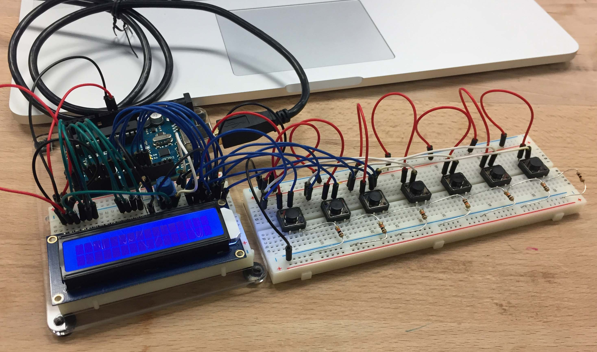
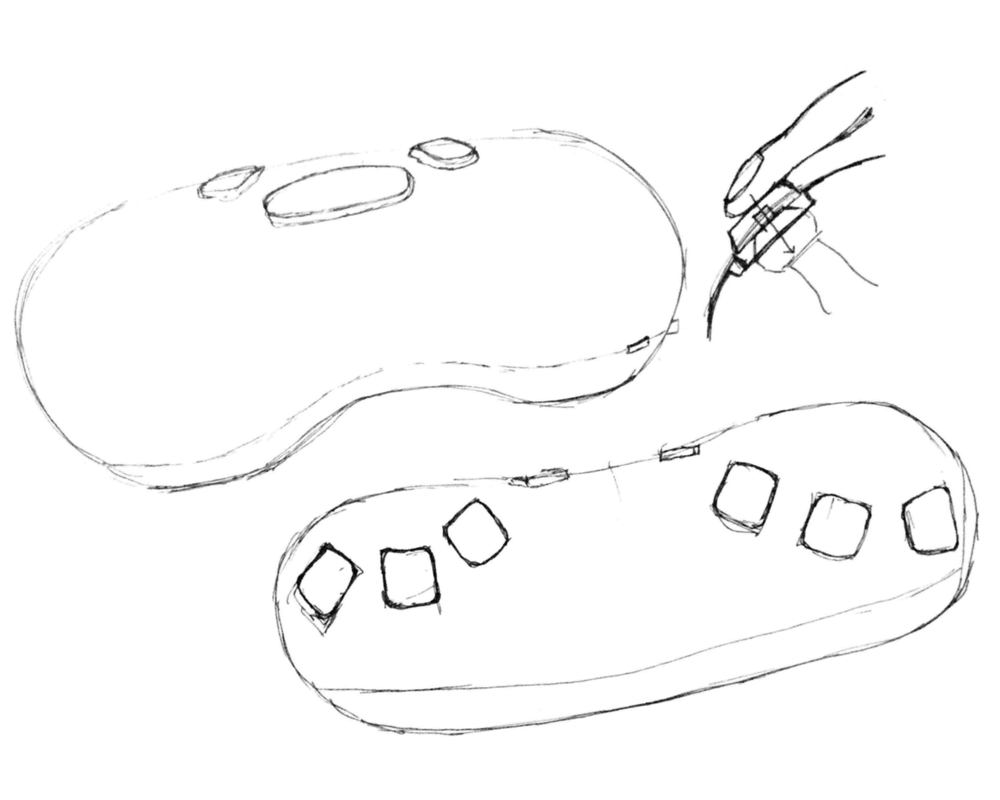
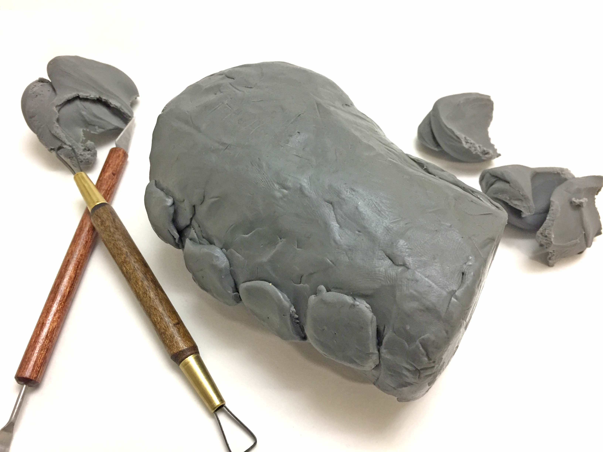
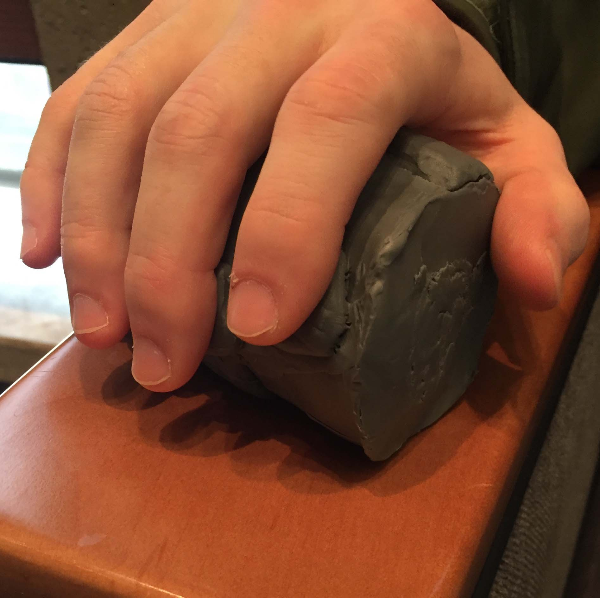
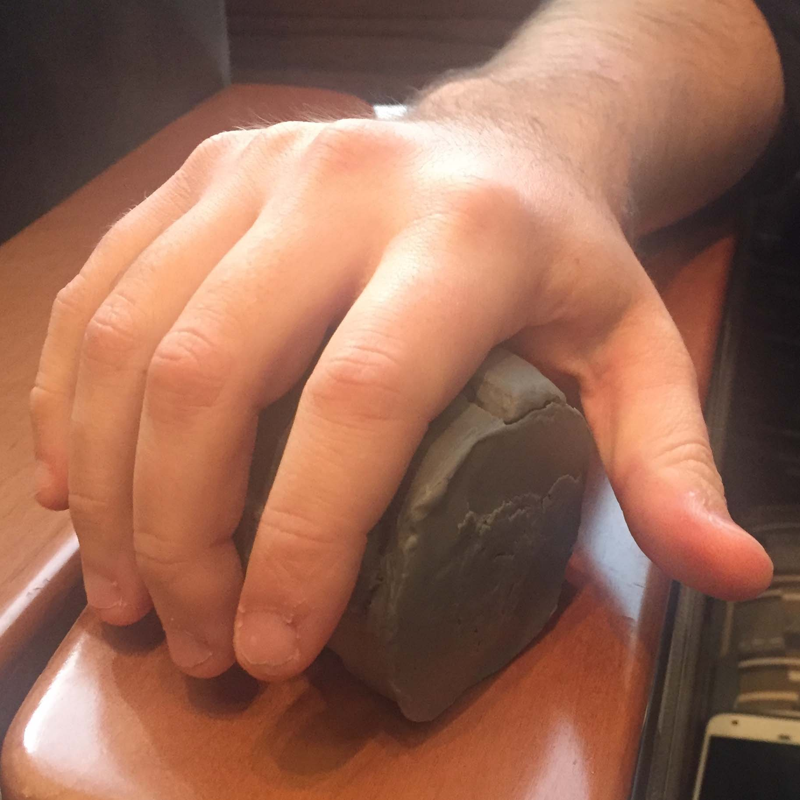
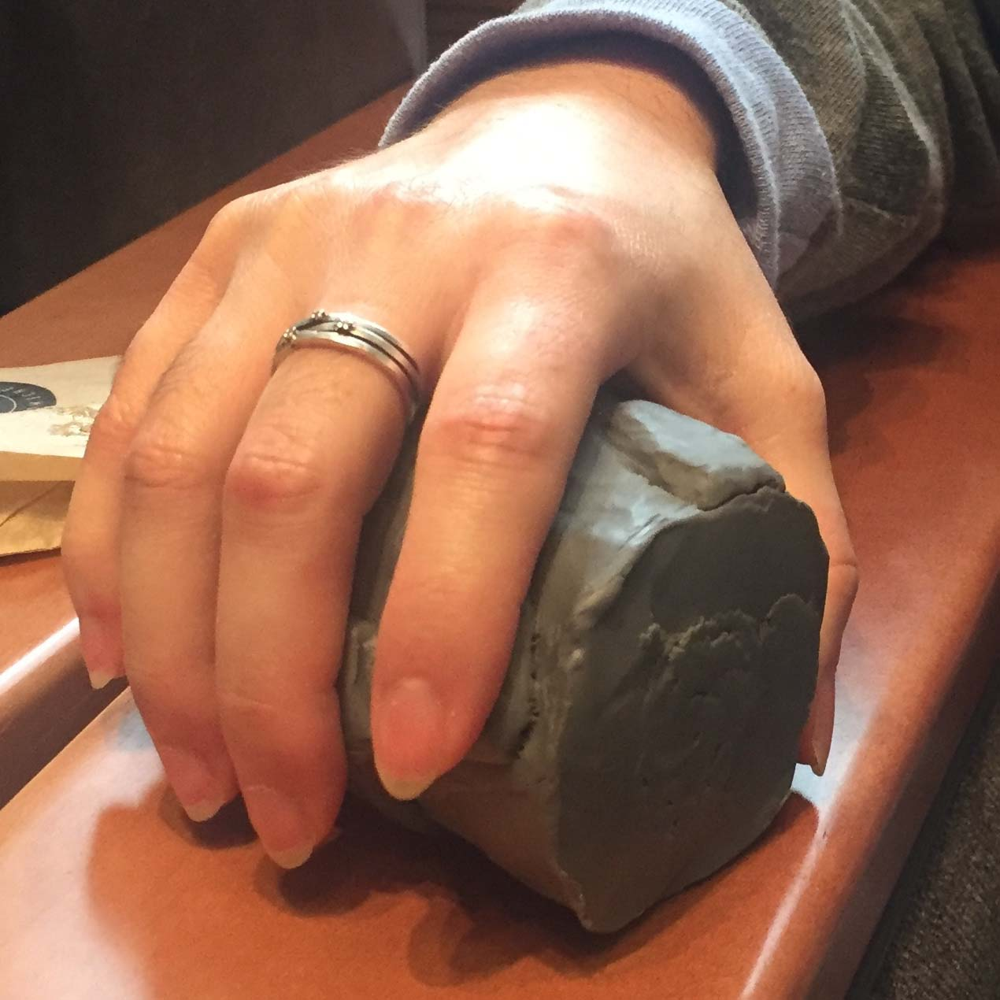
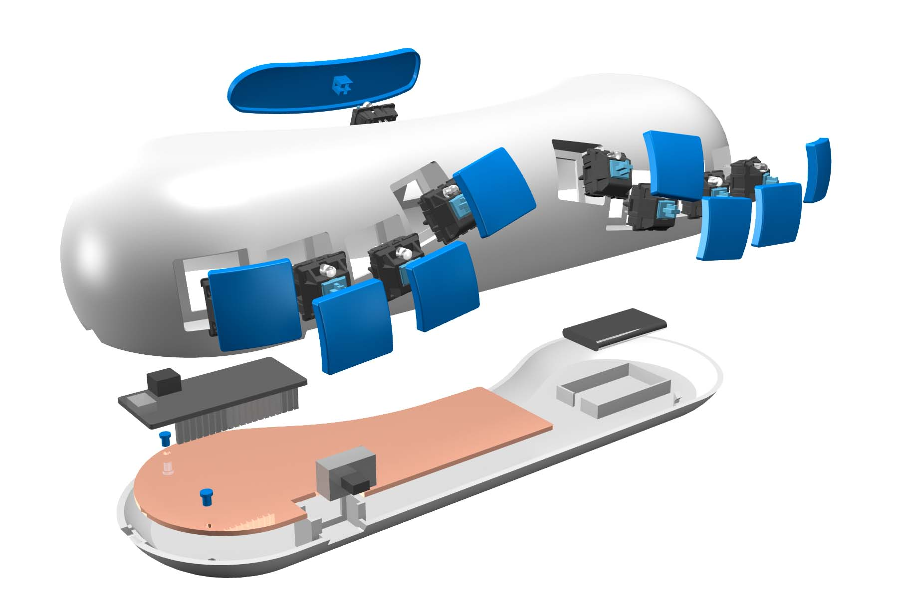
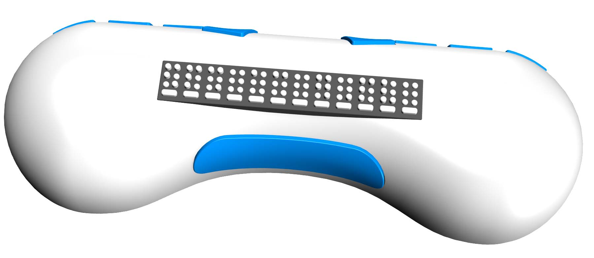

louis
braille keyboard prototype

Louis, a 1 ½ week individual project focused on electronic & physical prototyping.
Current braille chording keyboards1 are expensive and cumbersome, but provide immense functionality. Louis is an initial functional prototype for a Bluetooth LE braille keyboard that is portable, comfortable, and a potentially inexpensive alternative to current keyboards. Louis is an exploration into developing physical form and creating custom electronics to produce a high fidelity prototype.
$65.00
Cost of Louis
$395.00
Cost of Current Comparable Braille Notetaker
1chording keyboards: A keyboard that uses a set of keys, pressed in combination (a chord), to enter characters or commands.
tools
Clay · Rhino 3D · 3D Printer · Eagle CAD · Other Mill CNC · Soldering Tools · Arduino IDE
inspiration
Louis took root from a simple Arduino project. This initial implementation prototype sparked the desire to give form to the simple circuitry and to craft a functioning keyboard that can interface with a laptop, tablet, or smartphone. From its simple beginnings to its completed state, Louis is a true exploration of iterative prototyping.
modeling
 The goal was to create a comfortable keyboard that fit and supported the natural curvature of the hand. The entire device was also designed to fit inside a backpack or medium to large size bag. After some initial sketches, these drawings were translated into clay.
evaluation
Using the clay model, three individuals were asked to judge the comfort, support, and key placement of the model. All participants thought the form was comfortable and that most of the keys were in a good location and orientation. However, they all suggested moving the spacebar to the front of the form. This early evaluation helped avoid uncovering this issue after creating the higher fidelity version. The clay model allowed for quick iterations and modifications.
  digital model
With the clay model finalized, the form was translated into Rhino 3D to create a digital model. The shape of the keys, the placement of the electronic components, and the mounting for the various keyboard switches were all incorporated into this digital model. Both the schematic and PCB design were completed using Eagle CAD. The digital model was used to create the outline of the PCB.
build
Using the digital model, the physical form was organized into three prints totaling 16 hours of 3D printing.
mill
The Other Mill was used to cut out the pin locations, the traces, the mounting holes, and board outline from a PCB (printed circuit board) blank.
solder
After a little cleanup of the copper traces, the Bluefruit micro-controller, Power Switch and Cherry MX keyboard switches were soldered to the board and tested.
assemble and program
With the case, keys, and electronic components complete, Louis was ready to be assembled. The software from the original Arduino prototype was reused and the support for BLE communication was added.
potential next steps
The main feature lacking in the current design is feedback on past text input. This is normally done by a braille readout. Including this component would increase the price of the device because of the small elements used in the component. Other alternatives should be considered if future iterations are explored to maintain Louis’s low cost goal. The software should also be improved to support special characters that require multiple braille characters to represent and include support for braille characters that represent common words (i.e. for, but, in). Another future goal is to make Louis open source.